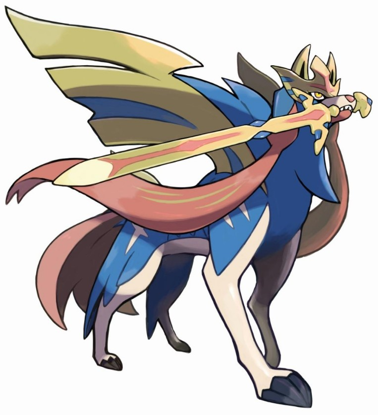
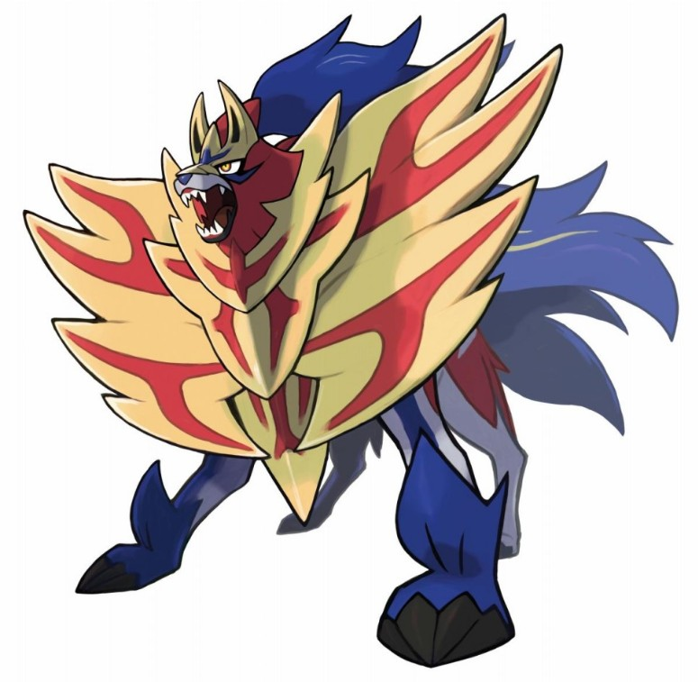

닌텐도 칩
모여봐요 동물의 숲
Ninjala
포켓몬스터 소드/실드
큐브 크리에이터 x
별의 커비 스타 얼라이즈
'포켓몬스터 소드,실드'
는 주인공이 포켓몬 챔피언이라는 꿈을 갖고 포켓몬을 잡고 키우며 성장해나가는 게임이다. 처음에 함께할 포켓몬을 고르고 다른 포켓몬을 잡으며 체육관 관장을 이기고 나가서
'와일드 에리어'
에서 다이맥스한 포켓몬을 이기고 잡은 뒤 팀으로 싸울수 있다. 또한 진행을 하다가 캠핑을 하거나 전설의 포켓몬을 잡고 결국엔 챔피언을 이겨서 꿈을 이룰수 있다.
 
왼쪽이 자시안, 오른쪽이 자마젠타이다.(둘 다 전설의 포켓몬)